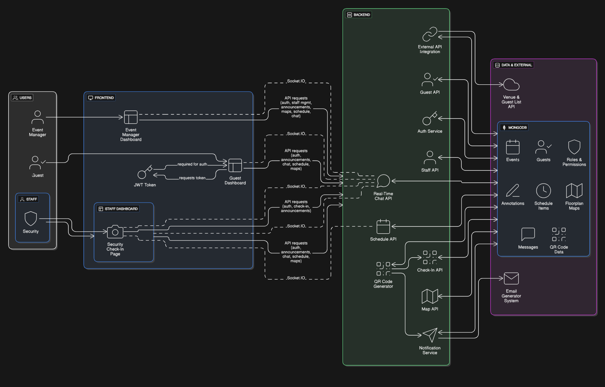

Methodology Used
We are using Agile Scrum as our project management methodology. Agile Scrum allows our team to work iteratively, adapt to changes quickly, and track progress efficiently.
Sprint Planning
Each sprint is planned with clear goals and tasks. Tasks are assigned to team members, and deadlines are set to ensure timely completion.
- Tasks are added to the sprint backlog
- Priorities are decided based on importance and dependencies
- Team members volunteer or are assigned tasks
Daily Stand-ups
Our team holds short daily meetings to:
- Report what was completed yesterday
- Discuss what will be done today
- Identify any blockers or issues
These stand-ups keep everyone aligned and aware of the progress.
Task Tracking
We track all tasks using Notion, where each task moves through the following workflow:
- To Do
- In Progress
- Review / Testing
- Done
This ensures transparency and accountability for all tasks.
Evidence & References
- All sprint planning, task tracking, and retrospectives are documented in our Notion workspace
- Official Scrum Guide: https://www.scrumguides.org/
- Architecture Diagram: 
.png){kind=link}
Rationale
Agile Scrum is chosen because it allows our team to:
- Deliver working features incrementally
- Adapt to changes quickly
- Keep all members accountable
- Ensure the main branch remains stable and deployable at all times